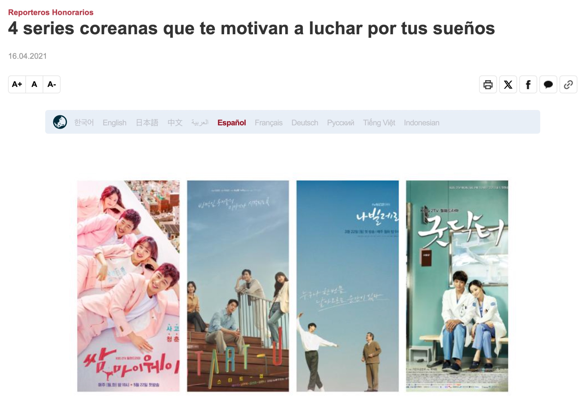

Proyecto interactivo

Proyecto interactivo sobre natalidad, desarrollado con visualización de datos, animaciones creadas en Adobe Animate y publicación web en Netlify.
Herramientas: Adobe Animate · HTML · CSS · JavaScript · Netlify
Ver proyecto →Diseño digital · Animación · Visual storytelling · Proyectos interactivos
Proyecto interactivo sobre natalidad, desarrollado con visualización de datos, animaciones creadas en Adobe Animate y publicación web en Netlify.
Herramientas: Adobe Animate · HTML · CSS · JavaScript · Netlify
Ver proyecto →Selección de proyectos audiovisuales, motion graphics, animación 3D y edición.

Artículos destacados publicados como Honorary Reporter, combinando escritura, comunicación cultural y edición visual.

Registro visual personal enfocado en viajes, naturaleza, ciudad y sensibilidad estética.
Ver fotografía →
Contenido visual y educativo sobre idioma y cultura coreana.
Ver Instagram →
Contenido digital y presencia visual orientada a soluciones tecnológicas.
Ver Instagram →
Selección de diseño digital, piezas visuales, 3D y proyectos creativos.
Ver Behance →Soy una creativa digital argentina con experiencia en diseño visual, animación, comunicación cultural, contenido educativo y proyectos interactivos.
Me interesa crear piezas que combinen narrativa, sensibilidad estética y tecnología, especialmente en áreas vinculadas al audiovisual, la cultura coreana, la educación y el storytelling visual.